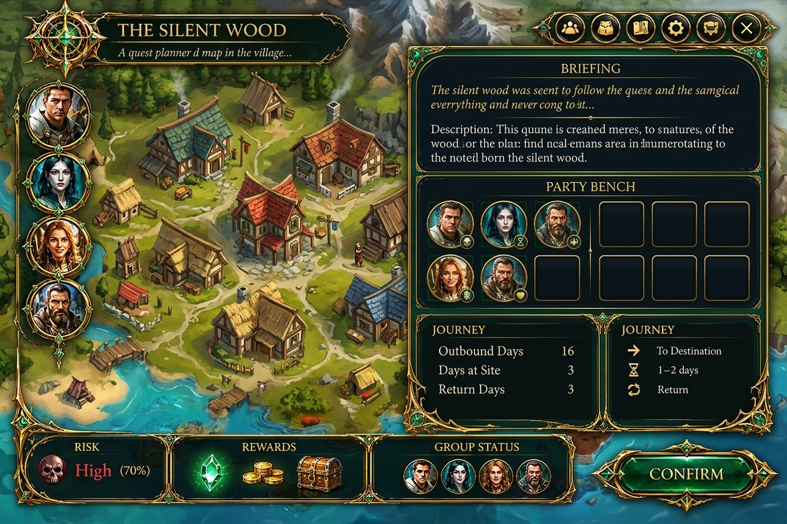
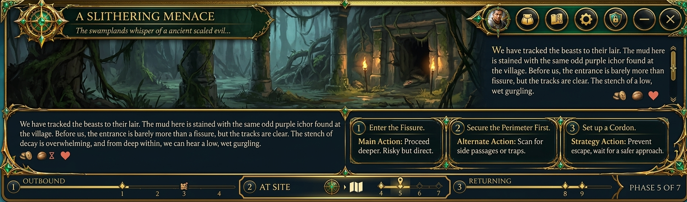

B — la coppia da ruling (planner + run)
Dal tuo GD: planner = OPT-3 (dossier sulla mappa, variante larga due colonne per la densità) · run = forma Ancient Relic ritoccata come sezione dedicata. ← le 3 opzioni · ← board
PLANNER — OPT-3 wide: la mappa viva a sx + placca dx a due colonne
Ci sta TUTTO: briefing (flavor+descrizione), party bench a due righe (5+5 → scalabile a più gruppi), journey (outbound/at-site/return), risk+rewards, group status, CONFIRM grande. La mappa resta contesto vivo a sinistra.

RUN — Ancient Relic ritoccata: sezione dedicata a stage pieno
Teatro cinematografico protagonista (~50%), beat text scrollabile, action deck 1-3 placche numerate, phase strip (OUTBOUND/AT SITE/RETURNING, PHASE n OF 7). Niente party/risk permanenti — nei 6 bottoni della title rail (pannelli laterali).
